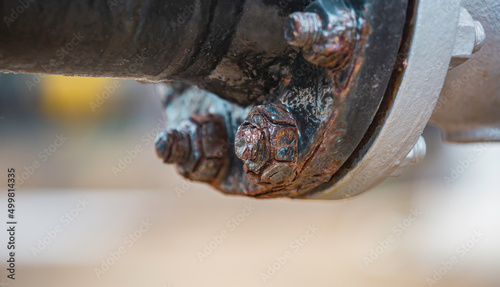

Pipeline Corrosion and Mitigation
Welcome! This site has been set up to answer, at a high level, how pipeline companies address the threat caused by corrosion on their underground assets. On the following pages, you will find the basics of corrosion, why pipelines corrode, and how they are protected from corrosion.
Over the 18 years I've been in the pipeline corrosion industry, I've tired to explain this threat and what it is I do to mitigate it to many people.
This site will present the information in a way that most people will have a basic understanding of pipeline corrosion and the steps that are taken to protect pipelines from it.
Something to consider, as we work to protect these structures from the threat of corrosion, we are also protecting the communities and environments that pipes are routed through.
As a corrosion specialist, I feel my responsibility goes beyond the company I work for, but to the people and environments wherein the assets I am responsible for are located.